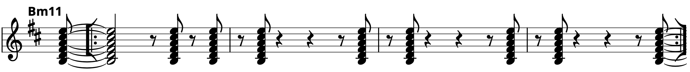
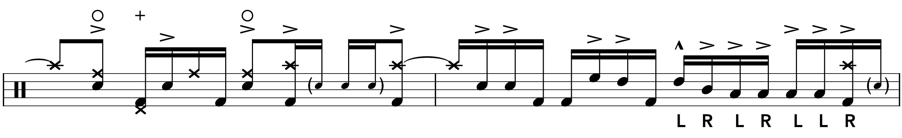
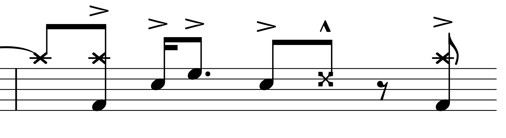
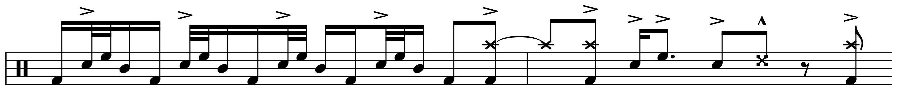
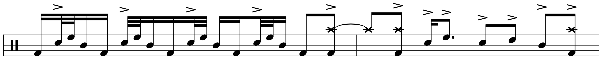

Transcription: “Aja” — Steve Gadd with Steely Dan

This week, I’m sharing my interpretation of a drumming classic: “Aja” by Steely Dan, with Steve Gadd on drums. I couldn’t gush over this whole record enough, like many drummers and musicians have. But in all seriousness, Aja is one of the most important albums for me as a drummer, and Steve’s solo is one of those moments that totally changes the way you look at the instrument. Pitchfork did a review of the album last year, for some reason, and while I will never understand Pitchfork, I love this comment about Gadd’s solo: “dressed with horns and synthesizers, [it] makes a person briefly feel as if they are being transported to a different dimension”. 10/10.
I’ve probably seen 5 or so different transcriptions of this tune, and eventually I decided to take my own shot at it. I’ve included all three drums breaks: the two that occur during Wayne Shorter’s tenor sax solo, as well as the big finale.
Gadd’s playing has been thoroughly dissected on this record (check out a famous DVD excerpt where Gadd breaks down some of his playing). On this solo, we can see a lot of the moves that Gadd was a fan of using during the mid-to-late 70’s: Bonham triplets (played KLR), offbeat hertas, hi hat barks, some linear playing, and his famous “Gaddamacue” (played RLLRLR KLLRLR KLLRLR):

I did find one interesting quirk: Gadd plays the hi hat pedal at the end of a lot of his 16th-note triplet figures. One of those things you only notice when you get to transcribing.
ICYDK, the solos are built around this offbeat, 8th note Bm11 vamp:
It’s really easy for the final solo to sound like it’s missing an 8th note once it ends because of the vamp. It can indeed be challenging to count along to. The track fades out on a funk samba groove, another favorite of Gadd’s during this time.
I think that most of the stickings are self-explanatory, expect for maybe this little moment from line 7 of the outro solo, which I’m pretty sure is a double-paradiddle:
Some of the crashes sound like ride-crashes, but I’m not really sure; in any case, I don’t find that level of detail to be productive.
There’s a lot of fun trivia surrounding the drum performance on this track. It’s pretty widely accepted that Gadd laid this down in about 20 minutes, with two takes at the most — some rumors even claim it was one take. There’s also a consensus that pretty much everything was all recorded together live, sans the sax solo and maybe a few other overdubs like the marimba.
Rick Beato made a video about “Aja” not too long ago, and he claims that he has some insider info: the original drummer for the tune was going to be Jim Keltner, but the performance didn’t feel right so Walter and Donald went with Gadd (Keltner still appears on Aja with the closer “Josie”).
Trying out different musicians was indeed something Steely Dan often did. A famous example includes the pair going through six different guitarists on another Aja track “Peg” before deciding on Jay Graydon.
I found a music blog containing a post that details a 2015 Q&A with longtime Steely Dan producer Gary Katz, written by one Martin Colyer. In this Q&A, Katz describes how Walter and Donald were keen on getting Steve Gadd on a Steely Dan record, but never got around to it until they felt like his skills were needed on Aja’s title track.
You should watch Rick’s video, and then read the full “Aja” section from Colyer’s website. I can’t tell how accurate the post is, but it is entertaining nonetheless. Apparently, Steve was so zooted during the session that a few months later, he heard a final mix and forgot he was playing on it. As Katz (maybe) describes:
…we were just about finished mixing the song, and someone said, "You know Gadd’s down the hall working on a Michael Franks record", and Don says, "Go get him, and let him hear this." … [Gadd] sat in front of the console and we played it really loud, really good sound. The track is over, he goes "Wow… who’s playing drums?" We just look at each other, ’cause he wasn’t kidding. I said, "You did, Steve"…
Big yikes.
One thing I find very interesting is that there are actually a few blunders on the drum performance. The most obvious one is right at the end of the first drum solo, where Gadd catches some rim:
There’s actually a bit of debate concerning that note. To start, there’s little agreement on if it’s a stick click or rim click. For instance, Beato thinks it’s a stick click, but it has always sounded like a rim click to me — it has the sharp, metallic attack of a rim click.
Second, if you start poking around on internet discussions, you’ll find that nobody’s sure about whether or not it’s intentional. There’s anecdotal support for both sides, e. g., “Gadd e-mailed me this,” or “Donald/Walter told me that”. Let’s look at the ends of the first two drum solos:
 To me, it sure seems like Steve was going for the same phrase each time, and I suspect accidentally knocked the rim of his second rack tom on that first go around.
There are a couple other clicks of one variety or another in the first solo, and maybe one or two more flubs in the full track. Given Walter and Donald’s obsession with perfectionism, combined with the fact that there wasn’t a lot of time spent with Gadd recording, I’m surprised they let these slip past. I guess they were so impressed with the performance that they thought it was worth it. Makes you wonder how they took such a nose dive with Gaucho…
“Aja” on Spotify and Apple Music.
Posted on August 9, 2020
Tags: 2020 • Transcription • Steve Gadd • Steely Dan